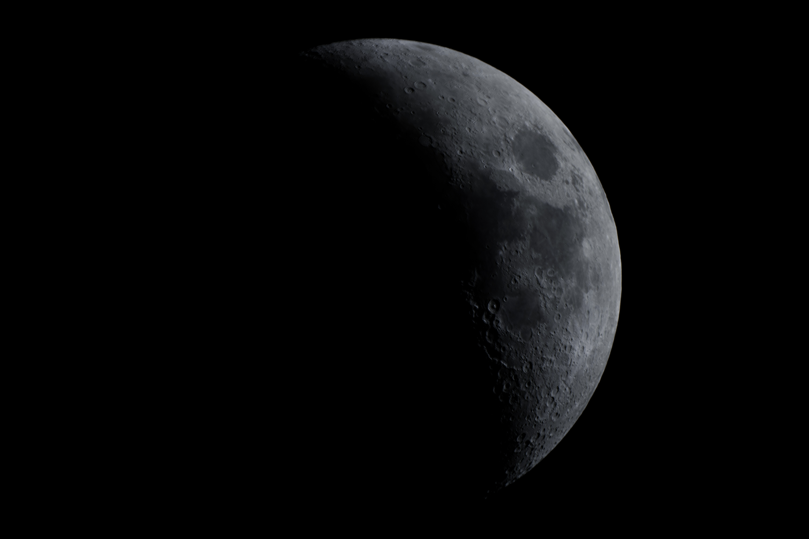

Astrophotography
For me, astrophotography is the perfect intersection between art and science. Each of the following Deep Sky Object images were obtained over the course of hours of exposures on my DSLR through my telescope, and many more additional hours of processing. Allowing for creative freedom while still being able to explore the beauty of the universe is my favorite aspect of astrophotography. Check out some of my images below.


